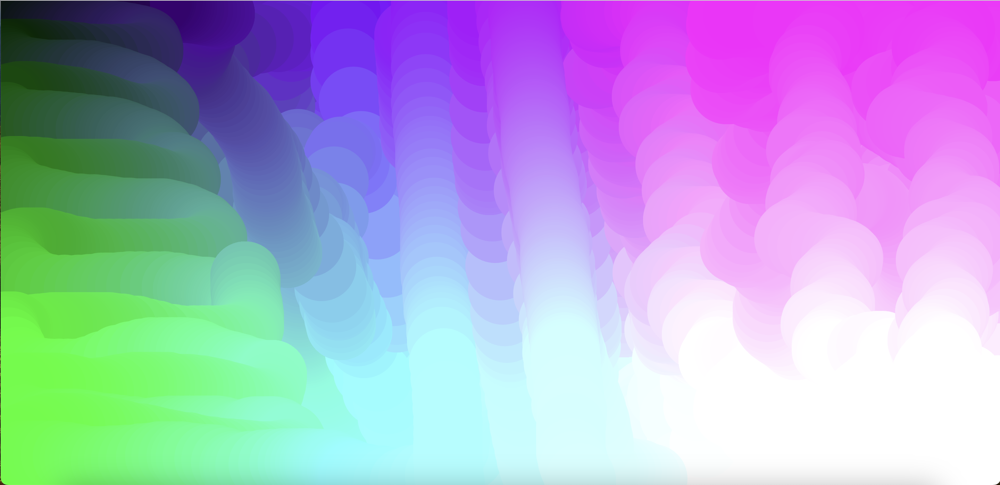
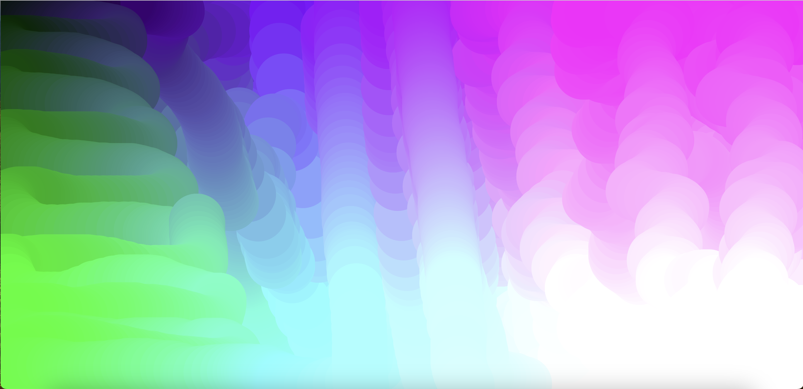
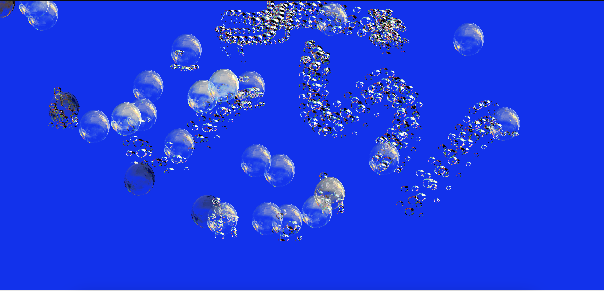
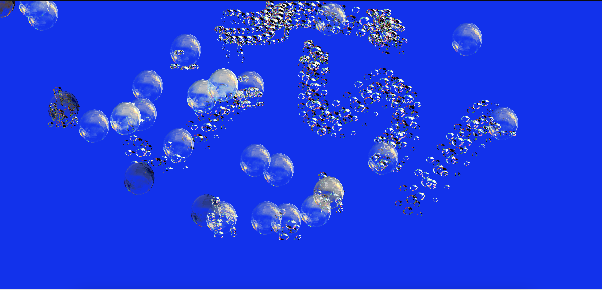

Interactive Media
Week 6: RAGE AGAINST THE MACHINE
📺 Networked & commodified data 📺 Data-drive design & Art 📺 Hacktivism, glitch, open source, and DIY 📺
This week we learnt about data driven art and design, and how we can incorporate it into our own interactive work.
HUNT N' GATHER

Panoramical, 2015
Using a 16 channel x/y control setup—the same that is used both for stage
lighting and for controlling audio effects in a sampler-based studio—the
player unfolds the musical secrets and sculptural expanse of each space.
Source: https://www.videogamesforthearts.com/articles/panoramical
By Fernando Ramallo and David Kanaga
From the moment it begins, you’re immersed in an audiovisual world that
responds to your movements. The game lets you explore interactive, generative
digital landscapes that change based on your input, and embarking on a visual
and musical adventure.
Instead of controlling an avatar, you use a game controller, MIDI controller,
or mouse-and-keyboard combo to shape both the world and the music together.
Worlds are algorithmically combined; the audio and visual fabric are sewn
together with code.
Dead Presidents, 2015
A generative illustration project using a custom drawing algorithm
in Processing, to recreate well known classic US presidential Portraits.
Source: http://www.kultur.design/portfolio/dead-presidents/
As the users draws, the algorithm creates a series of triangles based on a
regularly sampled mouse position. Color is sampled and averaged from the
underlying image. Images are output as PDF from Processing and imported and
artworked in Illustrator as A3 posters.
Processing was then used to import and break apart the SVG artwork,
and animate each polygon algorithmically in 3D space.
We then used this work in an interactive installation and video motion piece.

LuluxXX, 2015
Lulu xXX creates vibrant, astounding, and often intimate works that weave AI
and digital experimentation into thought-provoking statements on beauty and
feminine iconography.
https://www.luluixixix.com/overview/p-ii-tch-hicetnunc-2021#!
The artist uses optical flow analysis tools to capture motion from moving
footage and manipulates still digital images and motion sequences in a
transformative/generative way.
They also build and use their own tools using open-sourced and custom code.
LOOK!
Analysed the List the interactive elements of Slave to the Algorithm, a collection of works archived by Karen Ann Donnachie
WORKSHOP ACTIVITY 1: I HEAR YOU! P5 LIVE CODING DEMO
Introduction to interactivities related to sound (in & out), tone and triggers for notes, pattersn and clips.
Browse the experimentations I documented below
 



 



WORKSHOP ACTIVITY 2: IMAGE & SOUND
We ran through ways that we can utilise p5 libraries so that we can incorporate image, video and sound, so that we can then use filters, effects, pixel manipulation and pixel control.
- How to add images & video
- Filters, effects and pixel-manipulation
- Keyboard control


Interactive Media
Week 5: COMPUTER VISION & THE BLACK MIRROR
HTML BasicsThis week we are wrapping our head around the basics of HTML, and familiarizing ourselves with what code looks like.
gray mediamost recognizable from the world of work and administration, affecting the habits of government, business, and culture, yet rarely recognized or explored as media in their own right.